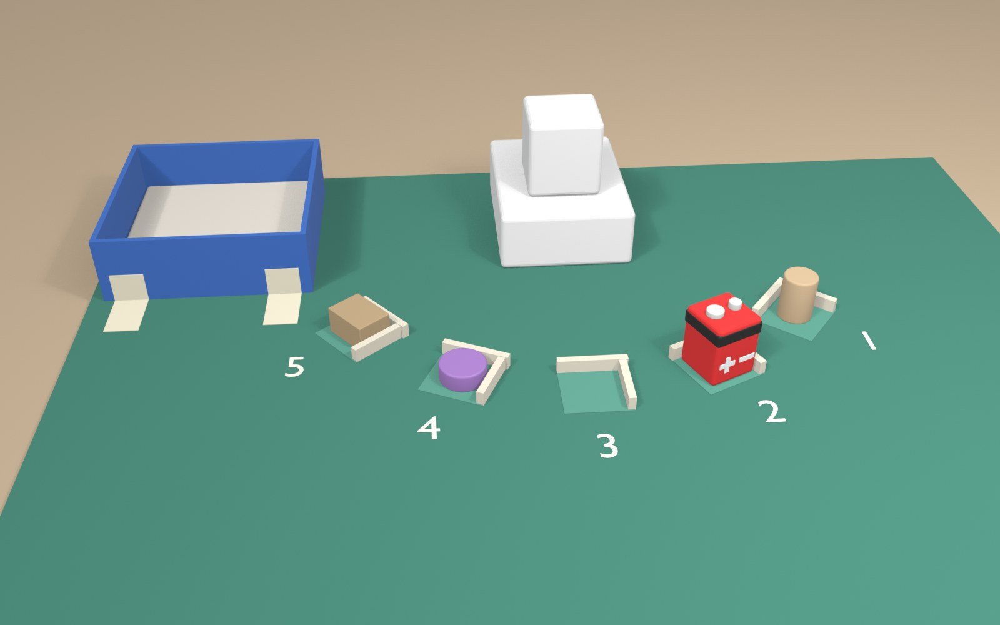
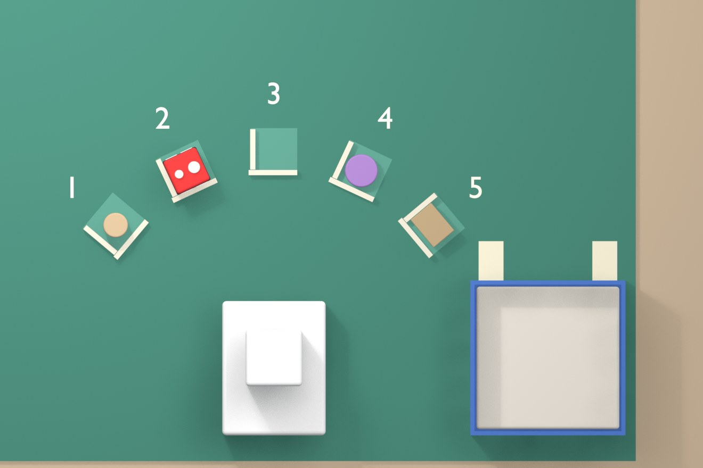
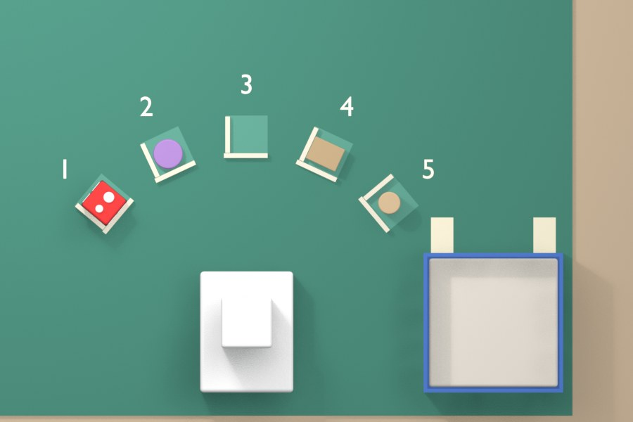
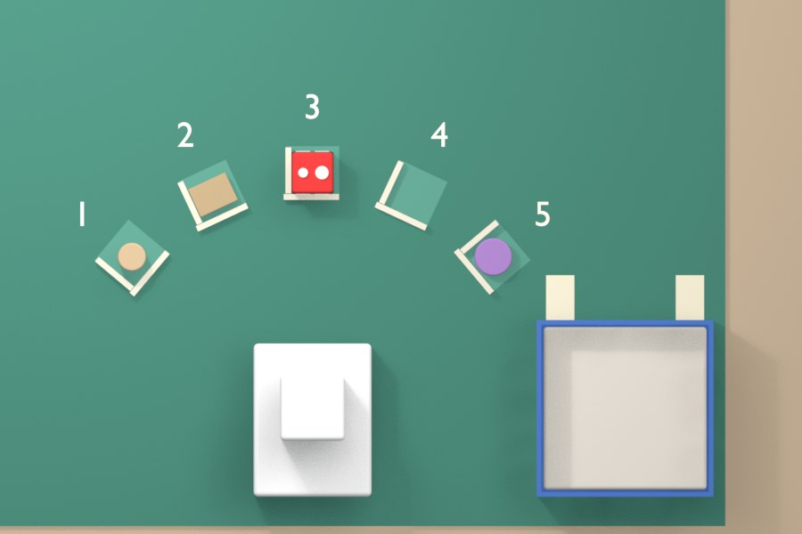
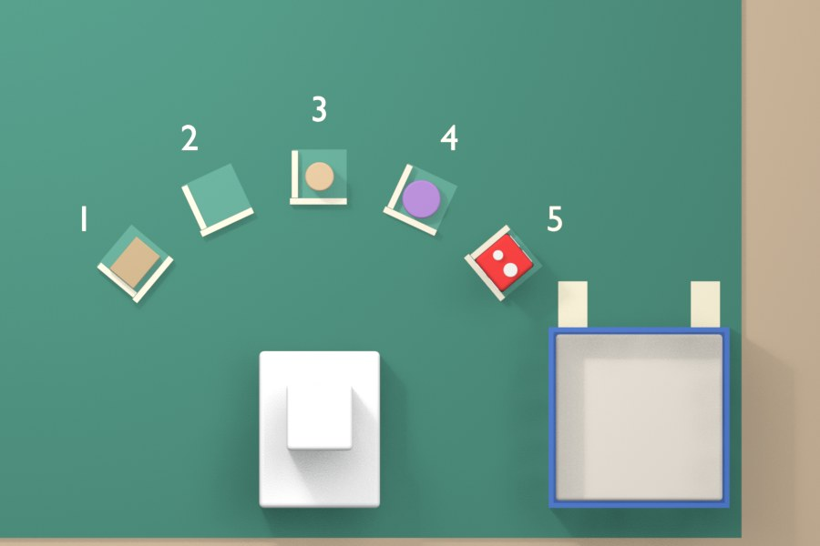
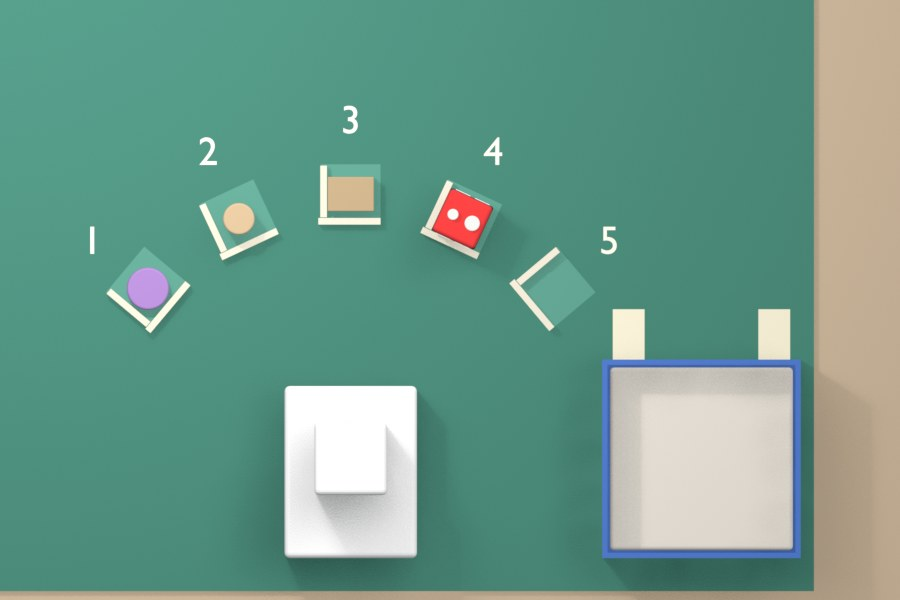
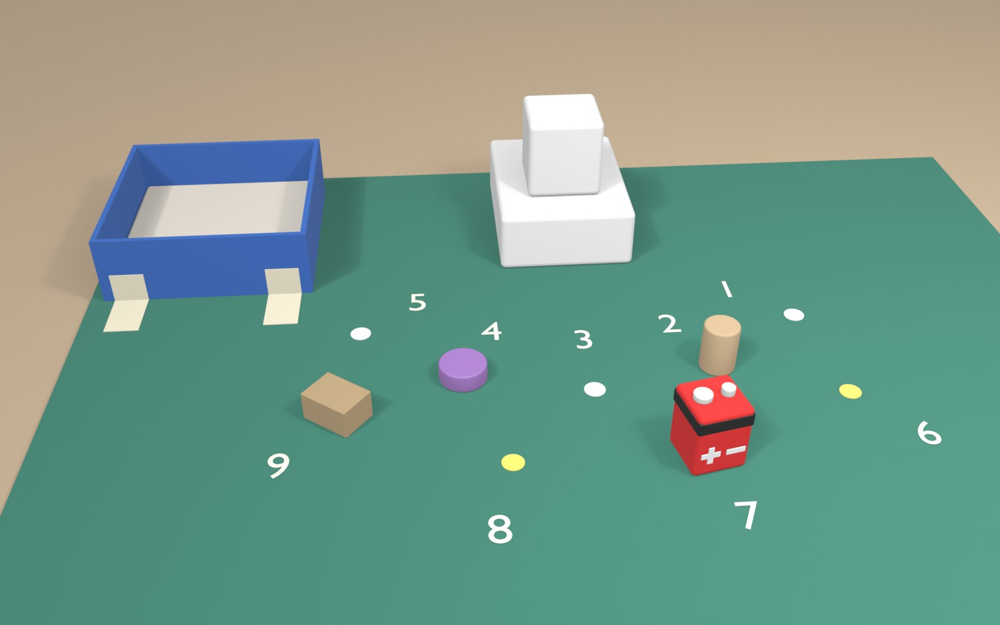
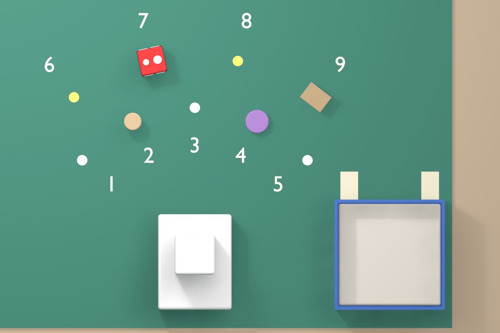
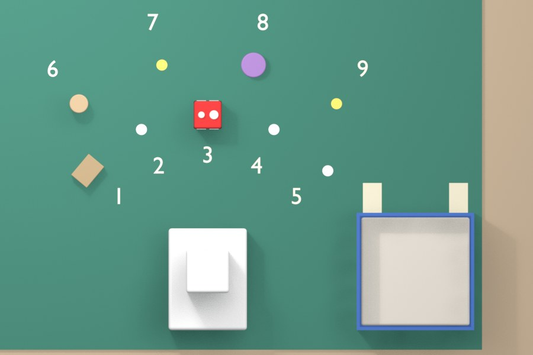
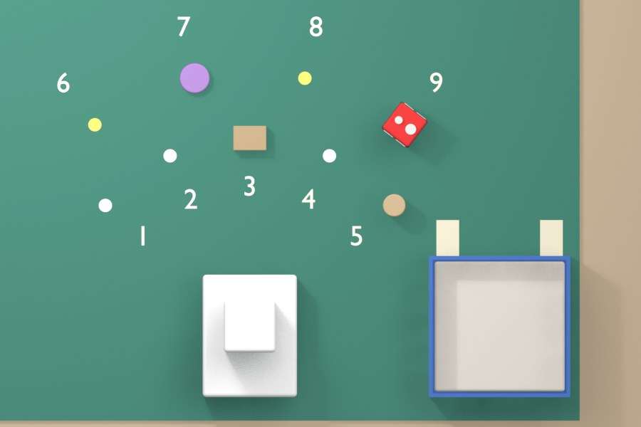

The arm pulls the battery out of a tray of rubbish and drops it in a bin. The battery is the only thing it ever picks up; the rubbish stays where it is. We score with the line strategy: four objects shuffled over five places on one arc. The dots strategy is an upgrade we only build once the line passes its test.
| Line | Dots | |
|---|---|---|
| Where objects may sit | 5 places on one arc, 20 cm from the arm | 9 places on two arcs, 20 cm and 27 cm |
| Possible arrangements of 4 objects | 120 | 3,024 |
| Can we record every arrangement? | Yes, in the first 120 episodes | No, under a tenth of them |
| Reach distances the arm must learn | 1 | 2 |
| Recordings | 200 (about 10 h) | 120 more on top of the line (about 6 h) |
| Role this weekend | The five scored attempts | Upgrade, only after the line passes |
The live demo is 30 of the 100 points, at 6 points per successful attempt, so the plan protects those five attempts first.


Put the battery in the bin, set in hackathon.toml before the first real recording and never changed afterwards.Because the rubbish is never grasped, it only has to stay put, sit lower than the battery, be matt, and be nowhere near red, orange or pink.




Whatever a judge sets up is one of these 120, and the first 120 episodes record each of them once. No scored attempt shows the arm a scene it has not seen.
| Round | Episodes | What you record | Recording | Then train |
|---|---|---|---|---|
| 1 | 1 to 60 | Half of the 120 arrangements, 12 per battery place | about 3 h | 20,000 steps · 1 h 48 |
| 2 | 61 to 120 | The other half. Every arrangement is now recorded once | about 3 h | 38,000 steps · 3 h 24 |
| 3 | 121 to 200 | 10 with the battery alone (2 per place), then 70 repeats aimed at whatever failed in testing | about 4 h | 63,000 steps · 5 h 39 |
Training times are for this laptop at its measured 3.1 steps per second, assuming 12-second episodes and about 7 passes over the data. so plan gives the real step count once recordings exist. Recording times use the organisers' pace of about 3 minutes per episode.
Schedule to aim for. Round 1 on Friday evening and train overnight. Round 2 on Saturday morning, running through 11:30 to 12:30 so the model sees Sunday's demo-hour light. Round 3 on Saturday from late afternoon, then the final training overnight. These times are a proposal: ask a mentor when the room closes.
Set up each episode as its row shows, left to right for places 1 to 5. Battery places rotate 1 to 5, and each round is balanced: every battery place meets every empty place equally often. The same list is in the repository as docs/strategy/recording-list.csv.
| Episode | Places 1 to 5 | Battery at | Recorded |
|---|
Ticks are saved in this browser only. If you delete and redo an episode, the dataset's own episode numbers shift, so keep a paper tally as well.
so qa flags and delete weak episodes.| When | Test | Gate |
|---|---|---|
| After round 1 | 15 attempts, 3 per battery place | The arm goes to the battery every time. Grasp problems are fixed before round 2 |
| After round 2 | 30 attempts, 6 per battery place, arrangements picked by a teammate | 28 of 30 or better. Each place that misses twice gets 10 of round 3's repeats |
| Sunday morning | 30 attempts with the final model, in demo light | Demo whichever of the last two models scored higher |
For each miss, note whether the arm went to the wrong place or reached the right place and fumbled the grasp. Record it with so eval. Only the first kind is a finding problem.
Placement tolerance. After round 2, test two places with the battery 1, 2 and 3 cm out of its corner and turned 15°, 30° and 45°. The largest offset that still works is the number to give a judge who asks "what if I put it here?"
so rollout --step <best step> --duration 30.Fallback. If picking among rubbish proves unreliable, demo with the battery alone. Round 3's ten battery-alone episodes exist for this.




If time is short, shrink it. Two outer dots instead of four cuts the arrangements from 3,024 to 840 and the extra recordings to about 60. Three identical pieces of rubbish cut the arrangements by six, to 504 with nine dots.
No layout guarantees a perfect run. This is how reliable each single attempt has to be:
| Success per attempt | Chance of 5 of 5 | Chance of 10 of 10 |
|---|---|---|
| 90% | 59% | 35% |
| 95% | 77% | 60% |
| 98% | 90% | 82% |
| 99% | 95% | 90% |
The jury scores five attempts. A 30-attempt test with at most two misses is the practical sign that you are in the 95% range or better.